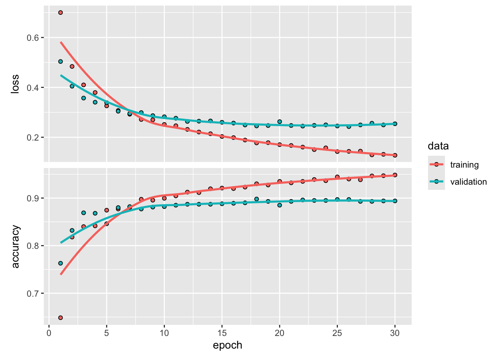

Konieczność trenowania modelu klasyfikacji obrazów przy użyciu bardzo małej ilości danych jest częstą sytuacją, z którą prawdopodobnie spotkasz się w praktyce. “Kilka” próbek może oznaczać różnie od kilku setek do kilkudziesięciu tysięcy obrazów. Jako praktyczny przykład, skupimy się na klasyfikacji obrazów jako psów albo kotów, w zbiorze danych zawierającym 4000 zdjęć kotów i psów (2000 kotów, 2000 psów). Użyjemy 2000 zdjęć do treningu, 1000 do walidacji i 1000 do testów.
W tym rozdziale omówimy jedną z podstawowych strategii radzenia sobie z tym problemem: trenowanie nowego modelu od podstaw przy użyciu niewielkiej ilości danych. Rozpoczniemy od naiwnego wytrenowania małej sieci splotowej na 2000 próbkach treningowych, bez żadnej regularyzacji, aby ustalić bazę tego, co można osiągnąć. Pozwoli to osiągnąć dokładność klasyfikacji na poziomie 71%. W tym momencie głównym problemem będzie overfitting. Następnie przedstawimy augmentację danych, technikę łagodzenia overfitting w wizji komputerowej. Używając augmentacji danych, poprawisz sieć do poziomu klasyfikacji 82%.
W dalszej części omówimy dwie kolejne techniki niezbędne do zastosowania głębokiego uczenia na małych zbiorach danych: ekstrakcję cech za pomocą wstępnie wytrenowanej sieci (co pozwoli osiągnąć dokładność od 90% do 96%) oraz dostrajanie wstępnie wytrenowanej sieci (co pozwoli osiągnąć ostateczną dokładność 97%). Razem, te trzy strategie - trenowanie małego modelu od zera, ekstrakcja cech przy użyciu wstępnie wytrenowanego modelu i dostrajanie wstępnie wytrenowanego modelu - będą stanowić twój przyszły zestaw narzędzi do radzenia sobie z problemem wizji komputerowej z małymi zbiorami danych.
Czasami można usłyszeć, że głębokie uczenie działa tylko wtedy, gdy dostępna jest duża ilość danych. Jest to tylko częściowo prawdziwe: jedną z fundamentalnych cech głębokiego uczenia jest to, że może ono znaleźć interesujące cechy w danych treningowych samodzielnie, bez potrzeby ręcznej inżynierii cech, a to można osiągnąć tylko wtedy, gdy dostępna jest duża ilość przykładów treningowych. Jest to szczególnie prawdziwe dla problemów, w których próbki wejściowe są wielowymiarowe, jak obrazy.
To, co stanowi dużą ilość próbek, jest względne - na przykład w odniesieniu do rozmiaru i głębokości sieci, którą próbujesz wytrenować. Nie jest możliwe wytrenowanie sieci splotowej do rozwiązania złożonego problemu przy użyciu zaledwie kilkudziesięciu próbek, ale kilkaset może potencjalnie wystarczyć, jeśli model jest mały i dobrze wyregulowany, a zadanie proste. Ponieważ sieci splotowe uczą się lokalnych, niezmiennych w czasie cech, są bardzo wydajne w przetwarzaniu danych dla problemów percepcyjnych. Trening sieci konwolucyjne od podstaw na bardzo małym zbiorze obrazów pozwoli na uzyskanie rozsądnych wyników pomimo względnego braku danych, bez potrzeby tworzenia własnych cech.
Co więcej, modele uczenia głębokiego są z natury bardzo uniwersalne: możesz wziąć, powiedzmy, model klasyfikacji obrazów lub mowy/tekstu wytrenowany na dużym zbiorze danych i użyć go ponownie do znacznie innego problemu z niewielkimi zmianami. W przypadku wizji komputerowej, wiele wstępnie wytrenowanych modeli (zazwyczaj wytrenowanych na zbiorze danych ImageNet) jest publicznie dostępnych do pobrania i może być wykorzystanych do stworzenia potężnych modeli wizji z bardzo małej ilości danych.
13.1 Pobieranie danych
Zestaw danych Dogs vs. Cats, z którego będziesz korzystać, nie jest dołączony do keras. Został udostępniony przez Kaggle w ramach konkursu wizji komputerowej pod koniec 2013 roku, jeszcze w czasach, gdy sieci splotowe nie były głównym nurtem. Oryginalny zbiór danych można pobrać ze strony https://www.kaggle.com/competitions/dogs-vs-cats/data1.Zdjęcia to kolorowe JPEG-i o średniej rozdzielczości. Rysunek 5.8 pokazuje kilka przykładów.
1 konieczne będzie założenie konta w Kaggle, jeśli jeszcze go nie masz - bez obaw, proces jest bezbolesny
Nie jest zaskoczeniem, że konkurs Kaggle cat-versus-dogs w 2013 roku został wygrany przez uczestników, którzy użyli sieci konwolucyjnych. Najlepsze struktury osiągnęły do 95% dokładności. W tym przykładzie uzyskasz wynik bliski tej wartości, mimo że będziesz trenował swoje modele na mniej niż 10% danych, które były dostępne dla konkurencji.
Rysunek 13.1: Kilka przykładowych obrazów ze zbioru
Ten zbiór danych zawiera 25000 obrazów psów i kotów (12500 z każdej klasy) i ma rozmiar 569 MB (skompresowany)2. Po pobraniu i rozpakowaniu, utworzysz nowy zbiór danych zawierający trzy podzbiory: zbiór treningowy z 1000 próbek każdej klasy, zbiór walidacyjny z 500 próbkami każdej klasy oraz zbiór testowy z 500 próbkami każdej klasy. Poniżej znajduje się kod do wykonania tego zadania.
2 w ściągniętym pliku dogs-vs-cats.zip są zawarte trzy pliki, a skupiamy się na train.zip i to ten rozpakowujemy
cat("total validation dog images:", length(list.files(validation_dogs_dir)), "\n")
total validation dog images: 500
Kod
cat("total test cat images:", length(list.files(test_cats_dir)), "\n")
total test cat images: 500
Kod
cat("total test dog images:", length(list.files(test_dogs_dir)), "\n")
total test dog images: 500
Tak więc masz rzeczywiście 2000 obrazów treningowych, 1000 obrazów walidacyjnych i 1000 obrazów testowych. Każdy podział zawiera taką samą liczbę próbek z każdej klasy: jest to zrównoważony problem klasyfikacji binarnej, co oznacza, że dokładność klasyfikacji będzie odpowiednią miarą dopasowania.
13.2 Budowa sieci
W poprzednim przykładzie zbudowaliśmy małą sieć splotową dla MNIST. Ponownie użyjemy tej samej ogólnej struktury: sieć będzie stosem naprzemiennych warstw layer_conv_2d (z aktywacją relu) i layer_max_pooling_2d.
Ale ponieważ mamy do czynienia z większymi obrazami i bardziej złożonym problemem, sprawimy, że nasza sieć będzie odpowiednio większa: będzie miała jeszcze jedną kombinację layer_conv_2d + layer_max_pooling_2d. Służy to zarówno zwiększeniu pojemności sieci, jak i dalszemu zmniejszeniu rozmiaru map funkcji, aby nie były zbyt duże, gdy dojdziemy do layer_flatten. Tutaj, ponieważ zaczynamy od wejść o rozmiarze 150 × 150 (nieco arbitralny wybór), kończymy z mapami cech o rozmiarze 7 × 7 tuż przed layer_flatten.
Ważne
Głębokość map cech stopniowo zwiększa się w sieci (od 32 do 128), natomiast rozmiar map cech maleje (od 148 × 148 do 7 × 7). Jest to wzór, który zobaczysz w prawie wszystkich sieciach splotowych.
Ponieważ zajmujemy się problemem klasyfikacji binarnej, zakończymy sieć pojedynczą warstwą (layer_dense o rozmiarze 1) i sigmoidalną aktywacją. Ta warstwa będzie kodować prawdopodobieństwo wystąpienia jednej lub drugiej klasy.
W kroku kompilacji, użyjemy optymalizatora RMSprop. Ponieważ sieć kończy się pojedynczą jednostką sigmoidalną, użyjemy binarnej entropii krzyżowej jako funkcji straty.
Kod
model %>%compile(loss ="binary_crossentropy",optimizer =optimizer_rmsprop(learning_rate =1e-4),metrics =c("acc"))
13.3 Przygotowanie danych
Jak już wiemy, dane przed wprowadzeniem do sieci powinny być sformatowane w odpowiednio wstępnie przetworzone tensory zmiennoprzecinkowe. Obecnie dane są zapisane na dysku w postaci plików JPEG, więc kroki w celu wprowadzenia ich do sieci wyglądają mniej więcej tak:
Odczytaj pliki z obrazkami.
Zdekoduj zawartość JPEG na siatki pikseli RGB.
Przekształć je na tensory zmiennoprzecinkowe.
Przeskaluj wartości pikseli (między 0 a 255) do przedziału [0, 1] (jak wiadomo, sieci neuronowe wolą mieć do czynienia z małymi wartościami wejściowymi).
To może wydawać się nieco zniechęcające, ale na szczęście keras ma narzędzia, które zajmują się tymi krokami automatycznie. keras zawiera wiele narzędzi pomocniczych do przetwarzania obrazów. W szczególności, zawiera funkcję image_data_generator(), która może automatycznie przekształcić pliki graficzne na dysku w partie wstępnie przetworzonych tensorów. To właśnie z niej będziemy tutaj korzystać.
Przyjrzyjmy się wyjściu jednego z takich generatorów: daje on partie obrazów RGB o wymiarach 150 × 150 (kształt (20, 150, 150, 3)) oraz binarne etykiety (kształt (20)). W każdej partii znajduje się 20 próbek (rozmiar partii). Zauważ, że generator tworzy te partie w nieskończoność: zapętla się bez końca nad obrazami w folderze docelowym.
Kod
batch <-generator_next(train_generator)str(batch)
List of 2
$ : num [1:20, 1:150, 1:150, 1:3] 0.133 0.694 0.49 0.953 0.745 ...
$ : num [1:20(1d)] 0 0 1 1 0 0 0 1 0 1 ...
Dopasujmy model do danych uzyskanych za pomocą generatora. Robimy to za pomocą funkcji fit. Jako pierwszy argument oczekuje ona generatora, który będzie generował partie danych wejściowych i docelowych. Ponieważ dane są generowane w nieskończoność, generator musi wiedzieć, ile próbek pobrać z generatora, zanim zadeklaruje koniec epoki. Taką rolę pełni argument steps_per_epoch: po pobraniu z generatora partii próbek - czyli po wykonaniu kroków spadku gradientu - proces dopasowania przejdzie do następnej epoki. W tym przypadku, partie są 20-próbkowe, więc zajmie to 100 partii, aż do osiągnięcia celu 2000 próbek.
Kiedy używasz fit, możesz przekazać też argument validation_data. Ważne jest, aby zauważyć, że ten argument może być zbiorem danych, ale może to być również lista tablic. Jeśli przekażesz generator jako validation_data, to oczekuje się, że ten generator będzie dawał partie danych walidacyjnych w nieskończoność; dlatego powinieneś również określić argument validation_steps, który mówi procesowi ile partii ma pobrać z generatora walidacji do oceny3.
3 ponieważ liczebnośc tej próby wynosi 1000 obserwacji, to z prostego rachunku # validation_data / batch_size = 1000/20 = 50
Kod
history <- model %>%fit( train_generator,steps_per_epoch =100,epochs =30,validation_data = validation_generator,validation_steps =50)# można też zapisać modelsave_model_hdf5(model, filepath ="models/mod_conv.h5")
Kod
plot(history)
Te wykresy są charakterystyczne dla nadmiernego dopasowania. Dokładność szkolenia rośnie liniowo w czasie, aż osiąga prawie 100%, natomiast dokładność walidacji zatrzymuje się na poziomie 70-74%. Strata związana z walidacją osiąga swoje minimum już po pięciu epokach, a następnie zatrzymuje się, podczas gdy strata związana z treningiem zmniejsza się liniowo, aż osiągnie prawie 0.
Ponieważ mamy stosunkowo mało próbek treningowych (2000), overfitting będzie naszym najczęstszym problemem. Wiemy już o kilku technikach, które mogą pomóc złagodzić overfitting, takich jak dropout i regularyzacje L1 i L2. Teraz wprowadzimy nową, specyficzną dla wizji komputerowej i używaną niemal powszechnie podczas przetwarzania obrazów za pomocą modeli głębokiego uczenia: augmentację danych.
13.4 Augmentacja obrazów
Nadmierne dopasowanie jest spowodowany przez posiadanie zbyt małej ilości próbek do nauki, co powoduje, że nie można wytrenować modelu, który może uogólniać się na nowe dane. Przy nieskończonej ilości danych, twój model byłby wystawiony na każdy możliwy rozkład danych: overfitting nigdy nie byłby możliwy. Augmentacja danych polega na generowaniu większej ilości danych treningowych z istniejących próbek treningowych, poprzez szereg losowych przekształceń, które dają wiarygodnie wyglądające obrazy. Celem jest, aby w czasie treningu model nigdy nie widział dokładnie tego samego obrazu dwa razy. To pomaga wystawić model na więcej aspektów danych i lepiej generalizować.
W keras można to zrobić poprzez skonfigurowanie szeregu losowych przekształceń, które mają być wykonywane na obrazach odczytywanych przez image_data_generator.
To tylko kilka z dostępnych opcji. Prześledźmy szybko ten kod:
rotation_range to wartość podana w stopniach (0-180), czyli zakres, w którym można losowo obracać zdjęcia.
width_shift i height_shift to zakresy (jako ułamek całkowitej szerokości lub wysokości), w których można losowo przesuwać obrazy w pionie lub poziomie.
shear_range służy do losowego stosowania transformacji ścinających.
zoom_range służy do losowego powiększania obrazów.
horizontal_flip służy do losowego obracania obrazów w poziomie4 - ma to znaczenie, gdy nie ma założeń asymetrii poziomej (np. obrazy z prawdziwego świata).
fill_mode to strategia używana do wypełniania nowo utworzonych pikseli, które mogą pojawić się po obrocie lub zmianie szerokości/wysokości.
Jeśli wytrenujesz nową sieć używając tej konfiguracji augmentacji danych, sieć nigdy nie zobaczy tego samego wejścia dwa razy. Dane wejściowe, które widzi, są nadal silnie powiązane, ponieważ pochodzą z niewielkiej liczby oryginalnych obrazów - nie możesz wytworzyć nowych informacji, możesz jedynie zmiksować istniejące. Jako takie, może to nie wystarczyć, aby całkowicie pozbyć się nadmiernego dopasowania. Aby dalej walczyć z nadmiernym dopasowanie, dodajemy do modelu warstwę dropout, tuż przed klasyfikatorem gęsto połączonym.
Zanim przejdziemy do oceny dopasowania modelu wspomnijmy najważniejsze parametry w ustawieniu uczenia:
batch_size - określa liczbę próbek w każdej partii. Jego maksimum to liczba wszystkich próbek, co sprawia, że spadek gradientu jest dokładny, strata zmniejszy się w kierunku minimum, jeśli współczynnik uczenia jest wystarczająco mały, ale iteracje są wolniejsze. Z drugiej strony jego minimum to 1, co powoduje stochastyczny spadek gradientu - szybki, ale kierunek kroku gradientu jest oparty tylko na jednym przykładzie, dlatego może błądzić. batch_size pozwala na kompromis między dwoma skrajnościami: dokładnym kierunkiem gradientu i szybką iteracją. Maksymalna wartość dla batch_size może być ograniczona, jeśli twój model + zestaw danych nie mieści się w dostępnej (GPU) pamięci.
steps_per_epoch - liczba iteracji partii, zanim epoka treningowa zostanie zakończona. Jeśli masz zestaw treningowy o stałym rozmiarze, możesz go zignorować, ale może być przydatny, jeśli masz ogromny zestaw danych lub jeśli generujesz losowe augmentacje danych w locie, tj. jeśli twój zestaw treningowy ma (wygenerowany) nieskończony rozmiar.
validation_steps - podobne do steps_per_epoch ale na zestawie danych walidacyjnych.
Wracając do podsumowania dopasowania sieci, widzimy, że augmentacja oraz dodanie jednej warstwy regularyzacyjnej znacznie poprawiło wynik dopasowania (83%). Stosując więcej warstw regularyzacyjnych można osiągnąć jeszcze lepszy wynik 86-87%.
13.5 Wykorzystanie sieci wstępnie wytrenowanej
Powszechnym i wysoce efektywnym podejściem do głębokiego uczenia na małych zbiorach danych obrazów jest użycie wstępnie wytrenowanej sieci. Sieć wstępnie wytrenowana to sieć zapisana, która została wcześniej wytrenowana na dużym zbiorze danych, zazwyczaj na zadaniu klasyfikacji obrazów na dużą skalę. Jeśli ten oryginalny zbiór danych jest wystarczająco duży i ogólny, to hierarchia cech przestrzennych wyuczona przez wstępnie wytrenowaną sieć może efektywnie działać jako ogólny model świata wizualnego, a zatem jej cechy mogą okazać się użyteczne dla wielu różnych problemów związanych z widzeniem komputerowym, nawet jeśli te nowe problemy mogą dotyczyć zupełnie innych klas niż te z oryginalnego zadania. Na przykład, można wytrenować sieć na ImageNet (gdzie klasy to głównie zwierzęta i przedmioty codziennego użytku), a następnie wykorzystać ją do czegoś tak odległego jak identyfikacja mebli na obrazach. Taka możliwość przenoszenia wyuczonych cech na różne problemy jest kluczową zaletą głębokiego uczenia w porównaniu do wielu starszych podejść płytkiego uczenia i sprawia, że głębokie uczenie jest bardzo efektywne w przypadku problemów z małymi danymi. W tym przypadku, rozważmy dużą sieć splotową wytrenowaną na zbiorze danych ImageNet (1,4 miliona oznaczonych obrazów i 1000 różnych klas). ImageNet zawiera wiele klas zwierząt, w tym różne gatunki kotów i psów, można więc oczekiwać dobrych wyników w problemie klasyfikacji koty kontra psy. Będziemy używać architektury VGG16, opracowanej przez Simonyan i Zisserman (2014); jest to prosta i szeroko stosowana architektura sieci konwolucyjnej dla ImageNet. Chociaż jest to starszy model, daleki od obecnego stanu wiedzy i nieco cięższy niż wiele innych najnowszych modeli, wybraliśmy go, ponieważ jego architektura jest podobna do tego, co już znamy i jest łatwa do zrozumienia bez wprowadzania nowych koncepcji. To może być pierwsze spotkanie z jedną z tych uroczych nazw modeli-VGG, ResNet, Inception, Inception-ResNet, Xception i tak dalej.
Istnieją dwa sposoby wykorzystania wstępnie wytrenowanej sieci: ekstrakcja cech i dostrajanie. Omówimy oba z nich. Zacznijmy od ekstrakcji cech.
13.5.1 Ekstrakcja cech
Ekstrakcja cech polega na wykorzystaniu reprezentacji wyuczonych przez poprzednią sieć do wyodrębnienia interesujących cech z nowych próbek. Cechy te są następnie przepuszczane przez nowy klasyfikator, który jest trenowany od podstaw.
Jak widzieliśmy wcześniej, sieci konwolucyjne używane do klasyfikacji obrazów składają się z dwóch części: zaczynają się od serii warstw pooling i konwolucji, a kończą na gęsto połączonym klasyfikatorze. Pierwsza część nazywana jest bazą konwolucyjną modelu. W przypadku sieci konwolucyjnych ekstrakcja cech polega na wzięciu bazy konwolucyjnej wcześniej wytrenowanej sieci, przepuszczeniu przez nią nowych danych i wytrenowaniu na jej wyjściu nowego klasyfikatora (patrz Rysunek 13.2).
Rysunek 13.2: Sposób zastosowania wyuczonej sieci
Dlaczego warto ponownie wykorzystać tylko bazę konwolucyjną? Czy mógłbyś ponownie użyć również gęsto połączonego klasyfikatora? Ogólnie rzecz biorąc, należy tego unikać. Powodem jest to, że reprezentacje nauczone przez bazę konwolucyjną będą prawdopodobnie bardziej ogólne, a zatem bardziej użyteczne: mapy cech sieci konwolucyjnej są mapami obecności ogólnych wzorców na obrazie, co prawdopodobnie będzie przydatne niezależnie od problemu widzenia komputerowego. Natomiast reprezentacje wyuczone przez klasyfikator będą z konieczności specyficzne dla zbioru klas, na których model został wytrenowany - będą zawierać jedynie informacje o prawdopodobieństwie obecności tej czy innej klasy na całym obrazie. Dodatkowo, reprezentacje znajdujące się w gęsto połączonych warstwach nie zawierają już żadnej informacji o tym, gdzie w obrazie wejściowym znajdują się obiekty: warstwy te pozbywają się pojęcia przestrzeni, lokalizacja obiektów jest opisywana tylko przez konwencjonalne mapy cech. Dla problemów, w których lokalizacja obiektów ma znaczenie, gęsto połączone cechy są w dużej mierze bezużyteczne.
Zauważmy, że poziom ogólności (a więc i możliwości ponownego wykorzystania) reprezentacji wyodrębnionych przez konkretne warstwy konwolucyjne zależy od głębokości warstwy w modelu. Warstwy znajdujące się wcześniej w modelu ekstrahują lokalne, bardzo ogólne mapy cech (takie jak krawędzie, kolory i tekstury), podczas gdy warstwy znajdujące się wyżej ekstrahują bardziej abstrakcyjne pojęcia (takie jak “kocie ucho” lub “psie oko”). Jeśli więc nowy zestaw danych różni się znacznie od zestawu danych, na którym był trenowany oryginalny model, lepiej będzie użyć tylko kilku pierwszych warstw modelu do ekstrakcji cech, niż używać całej bazy konwolucyjnej.
W tym przypadku, ponieważ zbiór klas ImageNet zawiera wiele klas psów i kotów, prawdopodobnie korzystne byłoby ponowne wykorzystanie informacji zawartych w gęsto połączonych warstwach oryginalnego modelu. Nie zdecydujemy się jednak na to, aby uwzględnić bardziej ogólny przypadek, gdy zbiór klas nowego problemu nie pokrywa się ze zbiorem klas oryginalnego modelu. Przedstawmy to w praktyce, wykorzystując bazę konwolucyjną sieci VGG16, wytrenowaną na ImageNet, do wyodrębnienia interesujących cech z obrazów kotów i psów, a następnie wytrenowania klasyfikatora koty vs psy na tych cechach.
Model VGG16, między innymi, jest dostarczany w pakiecie z keras. Oto lista modeli klasyfikacji obrazów (wszystkie wytrenowane na zbiorze danych ImageNet), które są dostępne jako część keras:
weights - określa punkt startowy wag, z którego należy zainicjalizować model.
include_top - odnosi się do włączenia (lub nie) gęsto połączonego klasyfikatora na szczycie sieci. Domyślnie, ten gęsto połączony klasyfikator odpowiada 1000 klas z ImageNet. Ponieważ zamierzasz użyć własnego gęsto połączonego klasyfikatora (z tylko dwoma klasami: kot i pies), nie musisz go włączać.
input_shape - to kształt tensorów obrazów, które podasz sieci. Ten argument jest czysto opcjonalny: jeśli go nie podasz, sieć będzie w stanie przetwarzać dane wejściowe o dowolnym rozmiarze.
conv_baseplot(conv_base)
1
sieć można przestawić jako podsumowanie tekstowe
2
ale również jako wykres
Ostateczna mapa cech ma kształt (4, 4, 512). To jest ta warstwa, do której będziemy dołączać sieć gęstą. W tym momencie możemy postąpić na dwa sposoby:
Uruchomienie bazy konwolucyjnej na zbiorze danych, następnie zapisanie jej wyjść do pliku na dysku, a następnie użycie tych danych jako danych wejściowych do własnego, gęsto połączonego klasyfikatora. To rozwiązanie jest szybkie i tanie5 w wykonaniu, ponieważ wymaga uruchomienia bazy konwolucyjnej tylko raz dla każdego obrazu wejściowego, a baza konwolucyjna jest zdecydowanie najdroższą częścią potoku. Ale z tego samego powodu ta technika nie pozwoli ci użyć augmentacji danych.
Rozszerzenie modelu, który mamy (conv_base), dodając gęste warstwy na górze i uruchamiając całą sieć na danych wejściowych. To pozwoli ci użyć augmentacji danych, ponieważ każdy obraz wejściowy przechodzi przez bazę konwolucyjną za każdym razem, gdy jest widziany przez model. Ale z tego samego powodu ta technika jest znacznie droższa od pierwszej. Zajmiemy się obiema technikami.
5 obliczeniowo
13.5.1.1 Ekstrakcja cech bez augmentacji
Zacznijmy od uruchomienia instancji wcześniej wprowadzonego image_data_generator, aby wyodrębnić obrazy jako tablice, jak również ich etykiety. Wyodrębnimy cechy z tych obrazów poprzez wywołanie metody predict na modelu.
ponieważ generator obrazów tworzy je w nieskończoność, to musimy go zatrzymać po tym jak każdy obraz zostanie obejrzany raz
Wyodrębnione cechy mają obecnie kształt (samples, 4, 4, 512). Będziemy je przekazywali do gęsto połączonego klasyfikatora, więc najpierw musisz je spłaszczyć do postaci (samples, 8192):
Kod
reshape_features <-function(features) {array_reshape(features, dim =c(nrow(features), 4*4*512))}train$features <-reshape_features(train$features)validation$features <-reshape_features(validation$features)test$features <-reshape_features(test$features)
Teraz możemy przejść do uczenia sieci gęstej na wstępnie przetworzonych danych przez sieć konwolucyjną.
model <-load_model_tf("models/exm_conv3/")load("models/exm_hist3.rda")plot(history)
Osiągnięty poziom dopasowania na zbiorze walidacyjnym bliski 90% jest imponujący. Jednak wykres uczenia pokazuje, że wystąpiło zjawisko nadmiernego dopasowania. Jest to spowodowane brakiem augmentacji danych w tym podejściu.
13.5.1.2 Ekstrakcja cech z augmentacją
Ponieważ modele zachowują się tak samo jak warstwy, możemy dodać model (taki jak conv_base) do modelu sekwencyjnego tak samo jak dodalibyśmy warstwę.
Jak widać, baza konwolucyjna VGG16 ma 14714688 parametrów. Klasyfikator, który dodajesz na końcu, ma 2 miliony parametrów. Zanim skompilujemy i wytrenujemy model, bardzo ważne jest zamrożenie bazy konwolucyjnej. Zamrożenie warstwy lub zestawu warstw oznacza uniemożliwienie aktualizacji ich wag podczas treningu. Jeśli tego nie zrobisz, to reprezentacje, które zostały wcześniej wyuczone przez bazę konwolucyjną, zostaną zmodyfikowane podczas treningu. Ponieważ gęste warstwy na górze są losowo inicjalizowane, bardzo duże aktualizacje wag byłyby propagowane przez sieć, skutecznie niszcząc reprezentacje wcześniej nauczone. W keras zamrażamy sieć za pomocą funkcji freeze_weights().
Kod
cat("Liczba tensorów poddawanych uczeniu przez zamrożeniem:", length(model$trainable_weights), "\n")
Liczba tensorów poddawanych uczeniu przez zamrożeniem: 30
Kod
freeze_weights(conv_base)cat("Liczba tensorów poddawanych ucznieu po zamrożeniu wag:", length(model$trainable_weights), "\n")
Liczba tensorów poddawanych ucznieu po zamrożeniu wag: 4
Przy takiej konfiguracji trenowane będą tylko wagi z dwóch gęstych warstw, które dodaliśmy. W sumie są to cztery tensory wag: dwa na warstwę (główna macierz wag i wektor bias). Zauważmy, że aby te zmiany zaczęły obowiązywać, musimy najpierw skompilować model. Jeśli kiedykolwiek zmodyfikujemy możliwość trenowania wag po kompilacji, powinniśmy ponownie skompilować model, w przeciwnym razie zmiany te zostaną zignorowane.
model <-load_model_tf("models/exm_conv4/")load("models/exm_hist4.rda")plot(history)

Jak widać, osiągnęliśmy dokładność walidacji na poziomie ponad 90%. Jest to znacznie lepszy wynik niż ten, który osiągnęliśmy z małą siecią konwolucyjną wytrenowaną od zera.
13.5.2 Dostrajanie sieci
Inną szeroko stosowaną techniką ponownego wykorzystania modelu, uzupełniającą ekstrakcję cech, jest dostrajanie. Dostrajanie polega na odmrożeniu kilku górnych warstw zamrożonej bazy modelu użytej do ekstrakcji cech i wspólnym treningu zarówno nowo dodanej części modelu (w tym przypadku w pełni połączonego klasyfikatora), jak i tych górnych warstw. Nazywa się to dostrajaniem, ponieważ nieznacznie dostosowuje bardziej abstrakcyjne reprezentacje modelu, który jest ponownie wykorzystywany, aby uczynić je bardziej odpowiednimi dla danego problemu.
Stwierdziliśmy wcześniej, że konieczne jest zamrożenie bazy konwolucyjnej VGG16, aby móc trenować losowo zainicjowany klasyfikator. Z tego samego powodu możliwe jest dostrojenie górnych warstw bazy konwolucyjnej tylko wtedy, gdy klasyfikator na górze został już wytrenowany. Jeśli klasyfikator nie był już wytrenowany, to sygnał błędu propagujący się przez sieć podczas treningu byłby zbyt duży, a reprezentacje wyuczone wcześniej przez dostrajane warstwy zostałyby zniszczone. Zatem kroki dostrajania sieci są następujące:
Dodaj swoją własną sieć na wierzchu już wytrenowanej sieci bazowej.
Zamroź sieć bazową.
Wytrenuj dodaną część.
Odmroź niektóre warstwy w sieci bazowej.
Wspólnie wytrenuj obie te warstwy i część, którą dodałeś.
Wykonaliśmy już pierwsze trzy kroki podczas wykonywania ekstrakcji cech. Przejdźmy do kroku 4: odmrozimy sieć conv_base, a następnie zamrozimy poszczególne warstwy wewnątrz niej. Dostroimy trzy ostatnie warstwy konwolucyjne, co oznacza, że wszystkie warstwy aż do block4_pool powinny być zamrożone, a warstwy block5_conv1, block5_conv2 i block5_conv3 powinny być trenowane. Dlaczego nie dostroić więcej warstw? Dlaczego nie dostroić całej bazy konwolucyjnej? Można. Ale musisz wziąć pod uwagę następujące kwestie:
Wcześniejsze warstwy w bazie konwolucyjnej kodują bardziej ogólne, możliwe do ponownego wykorzystania cechy, podczas gdy warstwy wyżej kodują bardziej wyspecjalizowane cechy. Bardziej przydatne jest dostrojenie bardziej wyspecjalizowanych cech, ponieważ są to te, które muszą być ponownie wykorzystane w naszym nowym problemie.
Im więcej parametrów trenujesz, tym bardziej ryzykujesz nadmierne dopasowanie. Baza konwencjonalna ma ~15 milionów parametrów, więc ryzykowna byłaby próba wytrenowania jej na twoim małym zbiorze danych.
Dlatego w tej sytuacji dobrą strategią jest dostrojenie tylko dwóch lub trzech górnych warstw w bazie konwolucyjnej. Ustawmy to, zaczynając od miejsca, w którym zakończyliśmy pracę w poprzednim przykładzie.
Kod
unfreeze_weights(conv_base, from ="block5_conv1")
Teraz możemy zacząć dostrajać sieć. Zrobimy to za pomocą optymalizatora RMSProp, używając bardzo niskiego współczynnika uczenia. Powodem użycia niskiego współczynnika uczenia jest to, że chcemy ograniczyć wielkość modyfikacji, które wprowadzasz do reprezentacji trzech warstw, które dostrajasz. Zbyt duże aktualizacje mogą zaszkodzić tym reprezentacjom. Dokonamy jeszcze jednej zmiany. Ponieważ odmrożenie ostatnich warstw bazy konwolucyjnej może spowodować przeuczenie sieci, to dodamy warstwę dropout.
Dopasowanie tej sieci okazało się najlepsze6 pomimo, jak widać z rysunku, nadmiernego dopasowania. Być może dołożenie jeszcze jednej warstwy regularyzacji zaradziłoby temu problemowi. Możemy też sprawdzić jak ta sieć radzi sobie z zupełnie nowymi danymi, zbioru testowego.